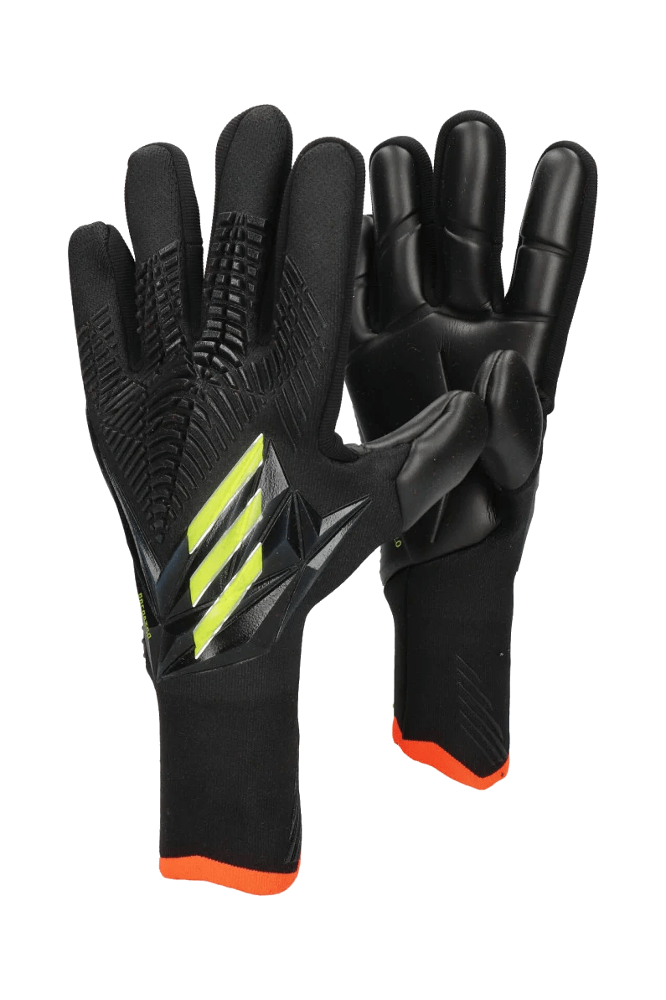
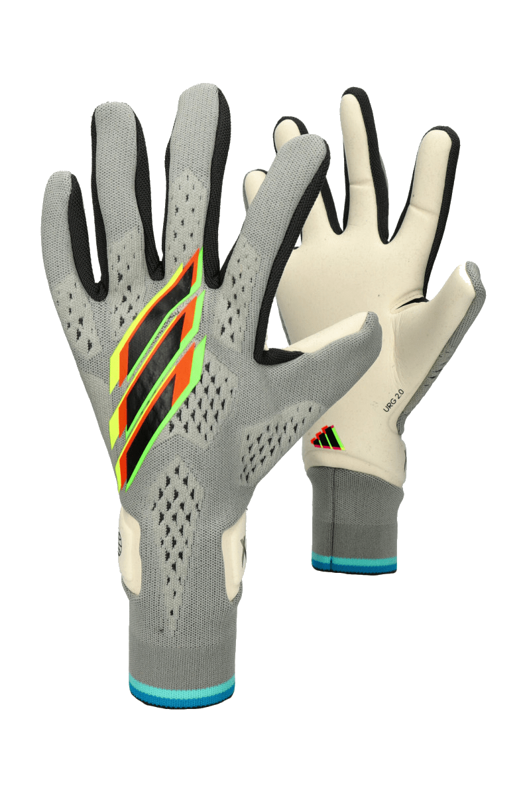
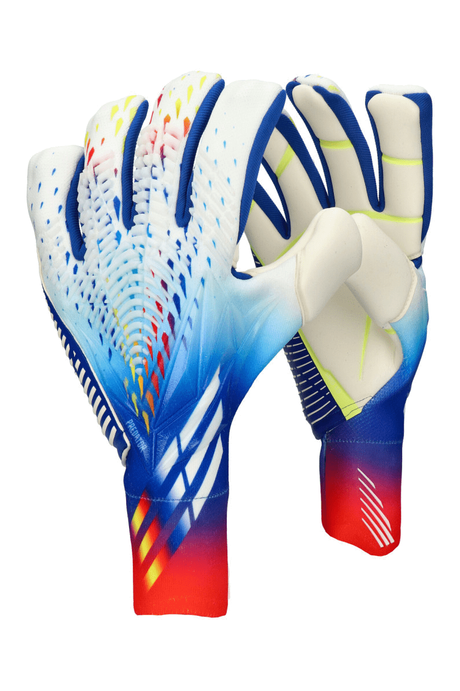
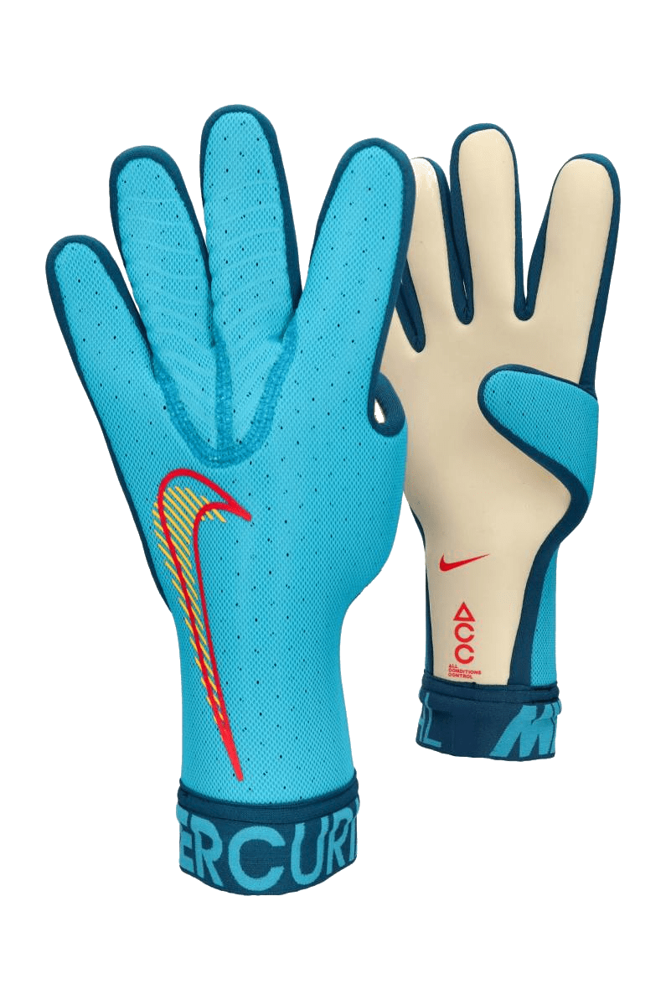
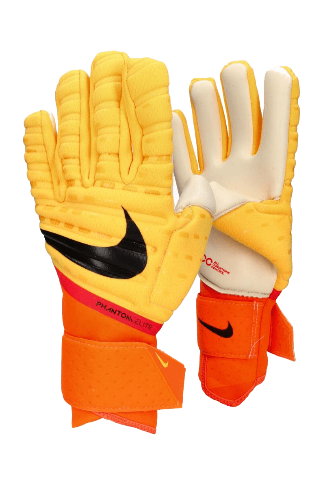

Adidas Predator Pro

Znajdź przewagę bramkarską w tych rękawicach piłkarskich bez pasków.
Odkryj zupełnie nową stronę swojej gry. Te rękawice bramkarskie adidas Predator Edge mają silikonową powłokę Zone Skin na dopasowującym się grzbiecie dłoni z dzianiny, która zwiększa kontrolę nad piłką przy szybkich wybiciach. Wewnętrzna część dłoni URG 2.0 zapewnia lepszą przyczepność i amortyzację. Kompresyjny otwór bez pasków odpowiada za naturalne dopasowanie, które pozwoli Ci się skoncentrować.
Wewnętrzna część dłoni URG 2.0 zapewnia lepszą przyczepność i amortyzację. Kompresyjny otwór bez pasków odpowiada za naturalne dopasowanie, które pozwoli Ci się skoncentrować.
Adidas X Speedportal Pro

Idealnie dopasowane rękawice bramkarskie wykonane z mieszanki materiałów pochodzących z recyklingu i odnawialnych źródeł.
Odkryj nowy wymiar zwinności. Rękawice bramkarskie adidas X Speedportal zapewnią Ci szybkość dzięki lekkiemu, opływowemu designowi. Elastyczny grzbiet dłoni bez pasków umożliwia bezpieczne dopasowanie dzięki mankietowi o specjalnej konstrukcji, który dokładnie przylega w nadgarstku. Lateksowa wewnętrzna część dłoni URG 2.0 ułatwia pewny chwyt piłki i amortyzuje uderzenia. W środku antypoślizgowy silikon sprawia, że jesteś jednym z rękawiczkami.
Co najmniej 50% tego produktu to mieszanka materiałów pochodzących z recyklingu i surowców odnawialnych.
Adidas Predator Pro Hybrid Fingersave

Znajdź przewagę bramkarską w tych wzmocnionych rękawicach piłkarskich.
Odkryj zupełnie nową stronę swojej gry. Te rękawice bramkarskie adidas Predator Edge mają silikonową powłokę Zone Skin na grzbiecie dłoni, która zwiększa kontrolę przy wybiciu piłki i wspiera palce, gwarantując pewny chwyt i rzut. Wewnętrzna część dłoni URG 2.0 zapewnia lepszą przyczepność i amortyzację. Kompresyjny otwór bez pasków odpowiada za naturalne dopasowanie, które pozwoli Ci się skoncentrować.
Nike Mercurial Touch Elite

W rękawicach bramkarskich Nike Mercurial Touch Elite Twoje interwencje na boisku są szybkie i bezbłędne. Prestiżowy projekt dopełniony logo brandu. Elastyczny pasek wokół nadgarstka zapewnia bezpieczne dopasowanie. Klin z odwróconymi szwami oplata dłonie, zapewniając naturalne dopasowanie. Odwrócone szwy na klinie zapewniają wygodny chwyt. Perforowana siateczka daje lekkość i przewiewność. Technologia ACC zapewnia kontrolę nad piłką zarówno w suchych, jak i mokrych warunkach.
Nike Phantom Elite

DOSKONAŁE BRONIENIE DZIĘKI ELASTYCZNOŚCI I PRZYCZEPNOŚCI.
Rękawice Phantom Elite Goalkeeper mają trwałą piankę, która blokuje strzały. Elastyczny materiał umożliwia wygodne poruszanie dłońmi. Technologia All Conditions Control (ACC) zapewnia doskonałą przyczepność zarówno w wilgotnych, jak i suchych warunkach.
Technologia All Conditions Control (ACC) zapewnia doskonałą przyczepność zarówno w wilgotnych, jak i suchych warunkach.
Elastyczny neopren z amortyzacją na grzbiecie dłoni umożliwia wykonywanie naturalnych ruchów.
Kliny z siateczki między palcami zapewniają przewiewność.
Wydłużona część osłaniająca nadgarstek ma klin ułatwiający zakładanie i zdejmowanie.